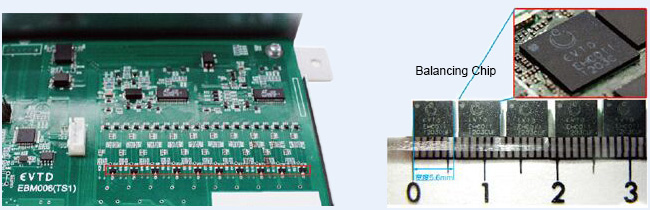

Current Location:Product Gallery——Li-ion Battery Balancing Chip
1.Brief Introduction
This product can be applied to battery management system (BMS) of EV, Hybrid EV, vehicles for specific fields, energy storage, standby power, ships, aeronautics and astronautics, adjusting and testing equipment for battery production, and other equipment related to li-ion battery. This product can solve the unbalance issue among the battery cells in one battery system, increase charge/discharge times by efficient energy transfer, and extend cell’s life. In addition, users can increase balancing current by parallel connecting this product according to their own needs.

3.Product features
・stackable architecture
・JEDEC Level 2
・balancing current as high as 1.5A
・protection feature in case of various failures
・charge transfer efficiency as high as 95%
・High precision, maximum deviation, 0.5%
・Simultaneous topology to minimize balancing time and power loss
・external voltage transformer or inductor not needed
・two-way simultaneous active balance to raise or lower voltage of series connected batteries
・small-sized package 5.6 mm X 5.0 mm; with 4 X 4 bumper guard
4.Main function
★Maximize Battery System
When installed with active balancing chip, it can avoid battery unbalance and fully exploit the whole capacity of the battery system. It can extend the use time after one-time charging and the usable capacity of the whole battery system as well. When applied to EV, can increase endurance travel length to a large extent. (Test standard: JC08 Ver. 4.0)
★Maximize life of battery system
When installed with active balancing chip, it can increase the number of cycles of the whole battery system and thus the life of the battery system. When applied to EV, it can increase the total travel distance of the EV. (Test standard: JC08 Ver. 4.0)
★Reduce production cost of the battery system
Performance of individual batteries limits the performance of the whole system. Even for new batteries, the manufacturers need to spend great amount of time and labor to make sets of the batteries (with similar voltage) and thus high cost of battery system production. When installed with active balancing chip, through active voltage balancing, we can skip the process of making sets and simplify the work, and lower the production cost.
★Increase use efficiency of batteries
During echelon use of Li-ion Battery, employment of active balancing chip can save the trouble of battery selection by replacing the failed batteries according to BMS information. Active balancing chip can automatically adjust the capacity of battery system, avoid unbalanced situation of new and old batteries. By simplifying the procedures of echelon use, we can lower the use cost and increase batteries’ use efficiency.